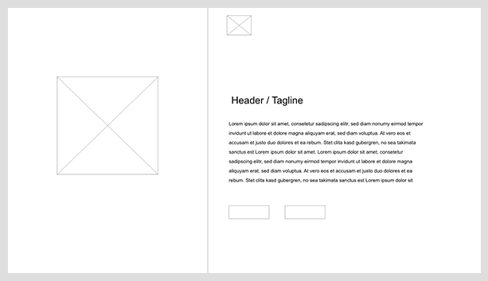
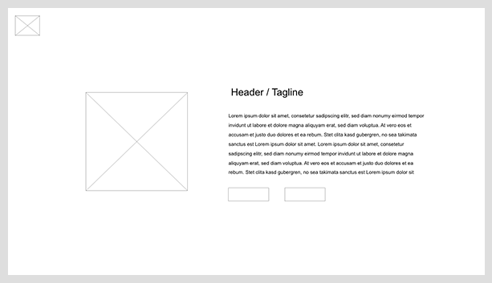
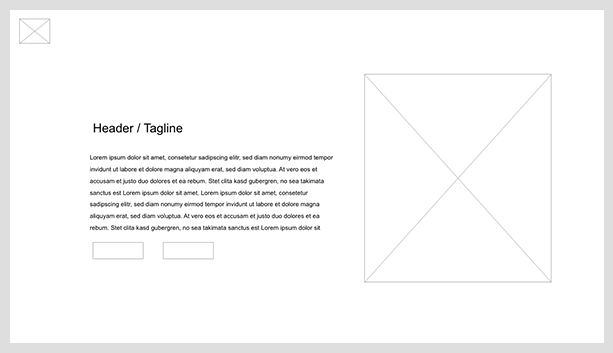
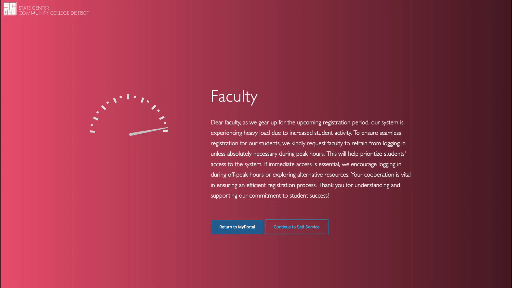
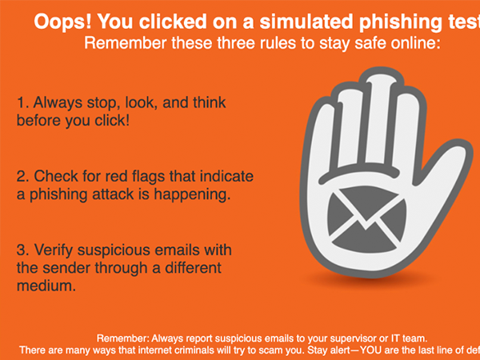
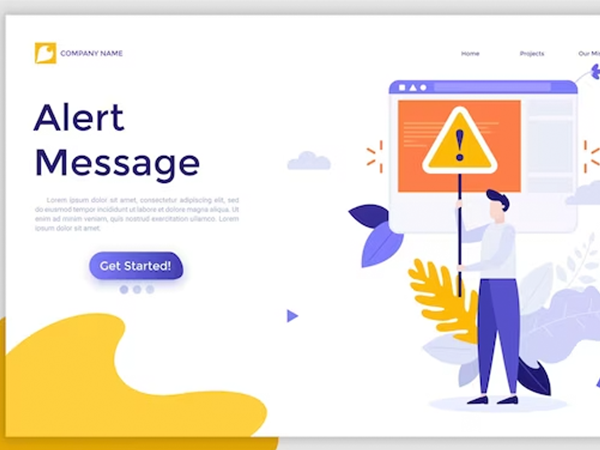
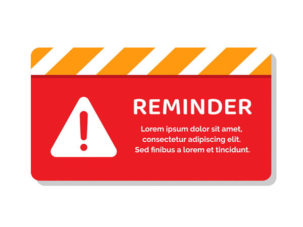
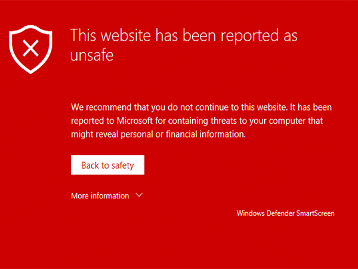

CASE STUDY
Faculty Traffic

Project Overview
In December 2023, we encountered unusual performance spikes on our school website. To mitigate this, I was tasked with creating a landing page that Faculty members would visit before accessing the main site. The purpose of this page was to remind Faculty to prioritize student access to the system during high traffic periods, while still providing them the option to proceed if necessary.
The project duration was short—spanning just two days—but in that time, I acted as the Lead UX Designer, UX Researcher, UX Tester, and Developer. This gave me the opportunity to oversee the project from the initial concept to the final implementation, ensuring it met the needs of both the users and the school.
Project duration December 10 2023 - December 11 2023.
My role within this project is that of a Lead UX designer, UX Researcher, UX Tester and Developer.
| Tech Stack | HTML, CSS, JavaScript |
|---|---|
| Project Type | Landing page |
| Role | Lead UX Designer, UX Researcher, UX Tester, Developer |
| Completion Date | Dec 2023 |

Key Features
- Attention-Grabbing Design: The page needed to immediately capture the attention of Faculty members.
- Clear Messaging: It had to remind Faculty that student access was a priority during high traffic periods.
- User Choice: Despite the reminder, Faculty still needed the option to proceed to the site if necessary.
- CSS-Only Animations: Animations were implemented using only CSS, keeping the page lightweight while adding a modern touch.

Project Gallery





Design and Development Insights
With a two-day turnaround, I acted as UX designer, researcher, tester, and developer, taking the page from concept to launch in that window.
User Research
User research was critical in the development of this landing page. I reviewed various examples of "Reminder" and "Warning" pages to draw inspiration for the design. This research helped me identify key elements that would be essential to creating a page that was both clear and attention-grabbing:
This single page site would be used in the event of unusually high traffice. I proceed to look for inspiration online knowing the page would need to be clear and grab attention.
- Attention-Grabbing Design: The page needed to immediately capture the attention of Faculty members.
- Clear Messaging: It had to remind Faculty that student access was a priority during high traffic periods
- User Choice: Despite the reminder, Faculty still needed the option to proceed to the site if necessary
By understanding the best practices and common elements of such pages, I was able to design a solution that was both effective and user-friendly.




Left to right: Phishing Page, Alert Page, Reminder Page, Warning Page
Design and Development Process
The single-page design allowed for rapid prototyping, and I created multiple mockups to explore different layout options. I was particularly focused on ensuring the page was visually engaging, with clean lines, bold typography, and an intuitive flow.
I also implemented animations using only CSS, which not only kept the page lightweight but also added a modern touch that enhanced the user experience.
Prototypes
Three different mockups were presented, each offering a unique layout to meet the project’s objectives. These mockups demonstrated various ways to structure the reminder and warning elements while maintaining ease of use for Faculty members.
After careful consideration and feedback, the final layout was selected, and the page was developed to include all necessary reminders and calls to action.
Key Performance Indicators
- 30% reduction in Traffic Spikes: After implementing the landing page, the system experienced a 30% reduction in traffic spikes during peak usage times, as Faculty members delayed their access to prioritize students.
- 25% reduction in Login Attempts During Peak Times: The page successfully diverted 25% of Faculty login attempts during periods of high student activity, ensuring smoother performance for students.
- 90% increase in User Awareness: A post-implementation survey indicated that 90% of Faculty found the landing page helpful in understanding the importance of prioritizing student access during busy periods.
Launch
The Faculty Traffic landing page was launched successfully and is now a critical part of our system's traffic management during peak times. It serves as a valuable reminder for Faculty, ensuring that student access remains the priority while still allowing Faculty to proceed when necessary.

Lessons Learned & Future Improvements
Rediscovering Front-End Craft
This project reinforced my passion for front-end development. Designing and developing the landing page allowed me to experiment with layout and animation while ensuring the page met the needs of both the school and its Faculty. I particularly enjoyed crafting the CSS-only animations, which provided a smooth and visually appealing user experience.
Impact
By implementing this landing page, the school was able to significantly reduce performance issues during high traffic periods. Faculty were reminded of the importance of student access, and the system's overall performance was stabilized during crucial times.
What I Learned
Through this project, I realized how much I enjoy working on front-end development, particularly when it involves creative design and CSS animations. The challenge of making a single page effective, engaging, and lightweight was both rewarding and enjoyable.
EXPLORE MORE
Continue through the portfolio.
Browse the complete project collection, or reach out if you would like to discuss the engineering and design decisions behind this work.